The Clough-Tocher Macro Panel lets you impose symmetric super smoothness conditions on the Clough-Tocher split and then check if a macro element can be built with those conditions.
To obtain the macro panel select the configuration "Clough-Tocher", and click on the button "macro elements" in the control panel. The buttons on the macro panel have the following effects:
Super smoothness conditions can be imposed using the text fields in the second row of the macro panel, and the buttons to either side of those text fields. The text fields lists the additional degree of smoothness. So if all the text fields show zero then the spline is the ordinary space without any super smoothness conditions at all.
Groups of super smoothness conditions are indicated by representative points, edges, or faces. Recall that the boundary vertices are labeled
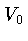,  , 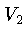, and
, 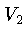, and  , and the centroid is
, and the centroid is
Natural Data
Let  and 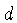 be as usual. Let 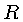 denote the
total degree of smoothness at the boundary vertices
and let
and 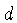 be as usual. Let 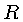 denote the
total degree of smoothness at the boundary vertices
and let  denote the total degree of smoothness along the
boundary edges. Then in terms of the domain points the following
are the natural data:
denote the total degree of smoothness along the
boundary edges. Then in terms of the domain points the following
are the natural data:
 imposable points.
imposable points.


The code attempts to impose the right number of conditions and informs you of whether or not this is possible.
The following examples will illustrate the ideas:
A Quintic  Element
Element
Let  and
and  , and require 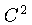 smoothness at the
boundary vertices. The dimension of the spline space is 68.
The natural data comprise 64 conditions that can all be
imposed. The four remaining degrees of freedom may be used, for
example, to interpolate to function and gradient values at the
centroid of the tetrahedron.
, and require 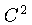 smoothness at the
boundary vertices. The dimension of the spline space is 68.
The natural data comprise 64 conditions that can all be
imposed. The four remaining degrees of freedom may be used, for
example, to interpolate to function and gradient values at the
centroid of the tetrahedron.
A nonic polynomial  element.
element.
Let  and
and  , and require 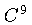 smoothness around the
centroid. The resulting space is actually polynomial of dimension
220. Imposing 4-balls around the boundary vertices and 2-globs along
the boundary edges, in addition to the natural face data, gives rise
to the well known polynomial
, and require 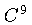 smoothness around the
centroid. The resulting space is actually polynomial of dimension
220. Imposing 4-balls around the boundary vertices and 2-globs along
the boundary edges, in addition to the natural face data, gives rise
to the well known polynomial  element. The 216 natural data
can be imposed, and the remaining four degrees of freedom can be used,
for example, to interpolate to function and gradient values at the
centroid of the tetrahedron.
element. The 216 natural data
can be imposed, and the remaining four degrees of freedom can be used,
for example, to interpolate to function and gradient values at the
centroid of the tetrahedron.